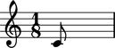
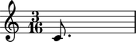

Working with notes

Pitch assignment
Change pitch with a number:
abjad> note = Note(0, (1, 4))
abjad> note.pitch = 2

With a pair:
abjad> note.pitch = ('e', 4)
Or with a Pitch instance:
abjad> note.pitch = Pitch('f', 4)

Any pitch token will work.
TODO: document pitch-to-pitch assignment.
Pitch comparison
Compare pitch to a number:
abjad> note = Note(0, (1, 4))
abjad> note.pitch == 0 True
To a pair:
abjad> note.pitch == ('c', 4)
True
To a Pitch instance:
abjad> note.pitch == Pitch('c', 4)
True
Or to another pitched Abjad object:
abjad> chord = Chord([0, 2, 10], (1, 4)) abjad> note.pitch == chord.noteheads[0].pitch True
Both pitch token and pitch-to-pitch tests work.
Types of pitch comparison
All six Python comparison operators work as expected.
abjad> n1 = Note(0, (1, 4)) abjad> n2 = Note(2, (1, 4))
abjad> n1.pitch == n2.pitch False
abjad> n1.pitch != n2.pitch True
abjad> n1.pitch > n2.pitch False
abjad> n1.pitch < n2.pitch True
abjad> n1.pitch >= n2.pitch False
abjad> n1.pitch <= n2.pitch True
Duration initialization
Initialize Note duration with a Rational.
abjad> note = Note(0, Rational(1, 8))
You can also use a duration token as a shortcut.
Duration attributes
Note has a _LeafDurationInterface.
abjad> tuplet = FixedDurationTuplet((1, 4), Note(0, (1, 8)) * 3) abjad> note = tuplet[0] abjad> note.duration <abjad.leaf.duration._LeafDurationInterface object at 0x63a30>
_LeafDurationInterface bundles six public attributes.
abjad> note.duration.multiplied Rational(1, 8)
abjad> note.duration.multiplier Rational(1, 1)
abjad> note.duration.preprolated Rational(1, 8)
abjad> note.duration.prolated Rational(1, 12)
abjad> note.duration.prolation Rational(2, 3)
abjad> note.duration.written Rational(1, 8)
Read more at _LeafDurationInterface.
Duration attribute assignment
You can reassign note.duration.written.
abjad> note = Note(0, (1, 4))
abjad> note.duration.written = Rational(3, 16)
Use must use a Rational which meets assignability criteria.
You can also assign note.duration.multiplier.
abjad> note = Note(0, (1, 4)) abjad> note.duration.multiplier = Rational(1, 6)
abjad> note.duration.written Rational(1, 4) abjad> note.duration.multiplier Rational(1, 6) abjad> note.duration.multiplied Rational(1, 24)
Use any positive Rational.
All other duration attributes are read-only.
To do
This currently causes reference problems: n1.pitch = n2.pitch. Can we block directly in the implementation? Or must we teach users never to cross references this way?